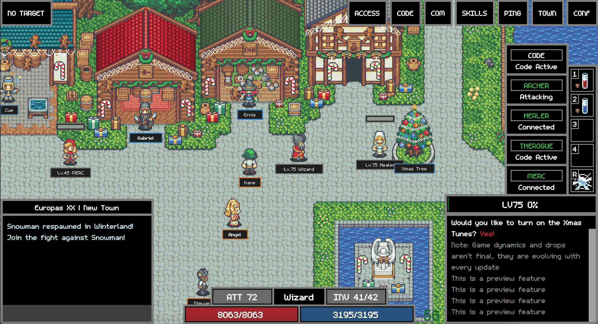
From the open-source code of the live game
A game guide for bot writers
Classes, combat, leveling, items, upgrades, the economy and events: what your code must know about the game.
Game data G 17478 · Art and screenshots from Adventure Land (adventure.land)
What Adventure Land is
Most MMOs ban bots. Adventure Land welcomes them.
The official client has a code editor, CODE. Your JavaScript calls functions such as attack(target) and move(x, y), and the character plays without you.
Players compete on the quality of their code, not on the speed of their hands.
A custom client goes one step further: it replaces the official client and sends the socket events itself.
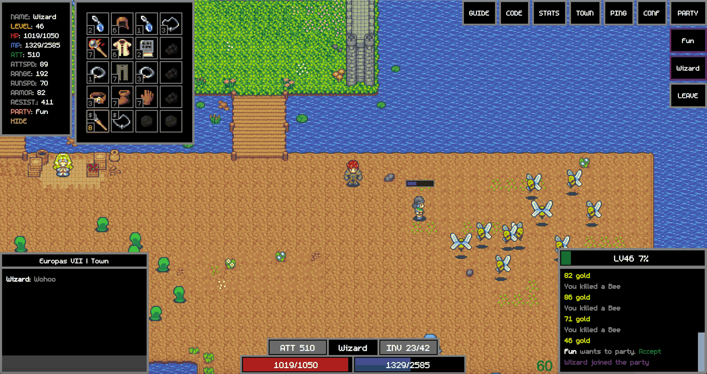
The Mainland town, the hub of the world.
Adventure Land game guide · What Adventure Land is
The world
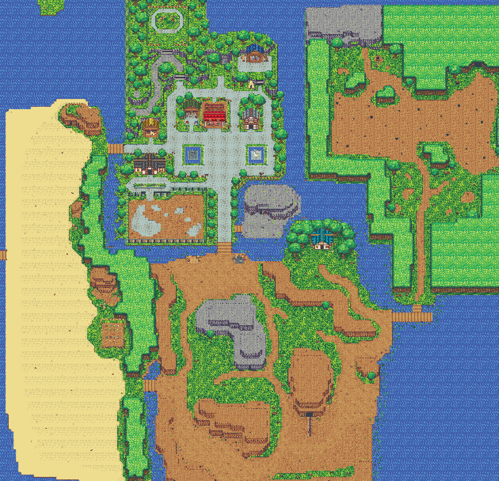
A map has walls, doors to other maps, NPCs and monster spawn areas. G.geometry holds the walls as lines.
Mainland (main) is the hub. Its town is near (0, 0). A new character starts at (−87, 673), in the south part of the town.
A spawn area is the box where one monster type lives. A dead monster returns after a few seconds.
All characters on a server share the same monsters, so other players can make a good area crowded.
54 maps are in G. The server uses 49 of them.
Source: G.maps, G.geometry (G 17478); api.js:496 · Map art from the game's own guide
Servers, regions and PvP
A server key is a region plus a name: EUI, USII, USPVP. Each server has its own monsters, bosses and event state (S).
| Region | Clock offset |
|---|---|
| EU | UTC +1 h |
| US | UTC −5 h |
| ASIA | UTC +7 h |
Keep all your fighters on one server, and make it their home.
Every map allows PvP. Xp ×1.2, gold ×1.25, luck ×1.15. Marked items can drop for your killer.
The first server you join. There you get 5× points on cooperative bosses and extra drop tables. Change it with set_home, once in 36 hours.
Level 60 or more on a server that is not home: −80% luck, gold and xp, and −20% damage, for 12 minutes of play.
Source: node/server.js:339-422, 5523-5535, 13311; node/server_functions.js:1094-1104
Accounts and characters
Without a platform link, each character gets authfail: −85% luck, −85% gold, −20% xp, and no bonuses for new players.
Slots: 5 for each account, 8 with a platform id, up to 18 at 200 shells each. A name has 4 to 12 characters.
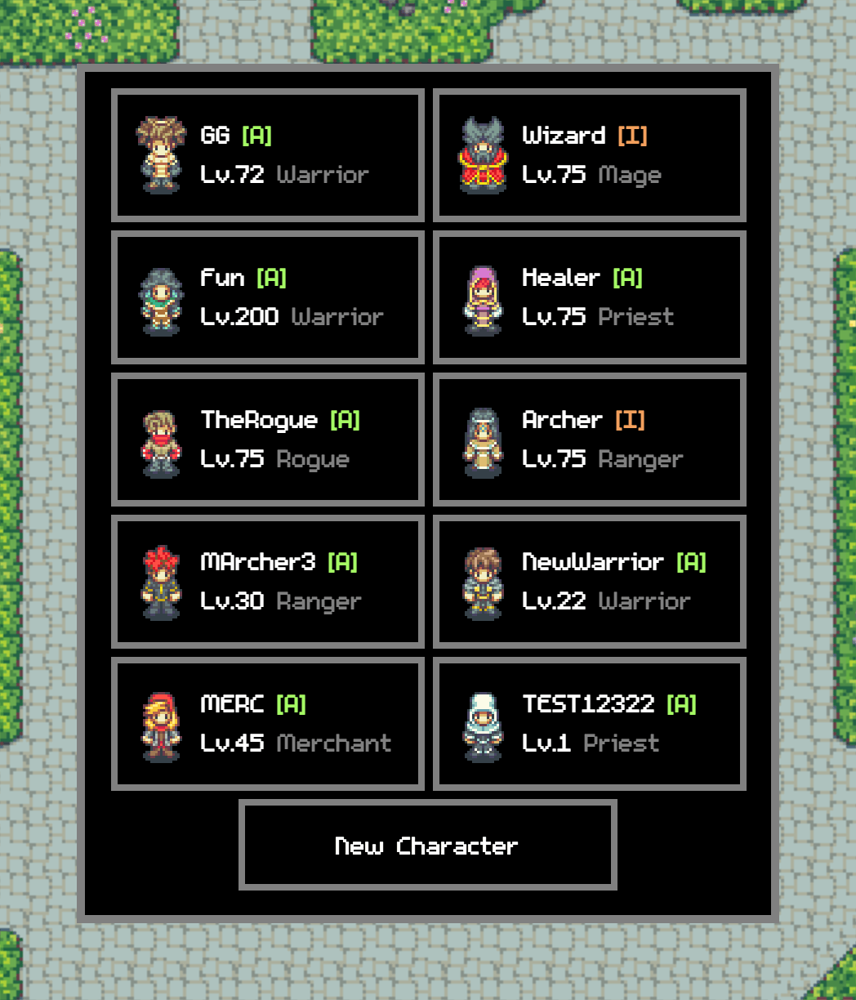
Source: api.js:14-31, 93, 559-563; node/server.js:11863-11869
Classes
| Class | Role | Main stat | Damage | Range (px) | Dmg/s | HP |
|---|---|---|---|---|---|---|
| Warrior | Tank, melee DPS | str | physical | 23 | 35 | 624 |
| Paladin | Tank, support | str + int | physical | 20 | 32 | 724 |
| Rogue | Melee DPS | dex | physical | 20 | 24 | 349 |
| Ranger | Ranged DPS | dex | physical | 70 | 25 | 320 |
| Mage | Ranged DPS | int | magical | 170 | 16 | 257 |
| Priest | Healer | int | magical | 170 | 10 | 305 |
| Merchant | Economy | int | none | 70 | 0 | 109 |
Each class at level 1 with its starting weapon. Armor stops physical damage, resistance stops magical damage. The two shaded rows are the classes for beginners.
Source: G.classes (G 17478); main stat bonus: node/server_functions.js:1745-1752
Which class to start with
Lone Wolf gives 3× gold, xp and luck while only one fighter of your account is online.
70 px with a bow, 170 px with a staff. A simple bot that stands still and attacks survives.
A merchant gets no xp from kills. Add one when you have loot to sell.
Source: G.classes[cls].description; node/logic/encouragement.js:223-271
Party roles
Tank
Takes the hits. Taunt moves a monster from an ally to the tank.
Healer
Keeps the others alive. "Every serious party needs at least one priest."
DPS
Kills quickly. Rangers and mages hit from a distance.
Economy
Does not fight. Sells loot, upgrades gear and keeps the gold.
| Composition | Why |
|---|---|
| Ranger or mage, plus a merchant | The start. Easy to code, and Lone Wolf gives 3×. |
| Warrior, priest, mage or ranger, merchant | The usual party. It survives almost all monsters that its gear allows. |
| Ranger, priest, mage, merchant | No tank. This works when monsters die before they arrive. |
A party holds 10 names, at most 9 fighters · Source: node/server.js:256-260; G.classes
Skills by level
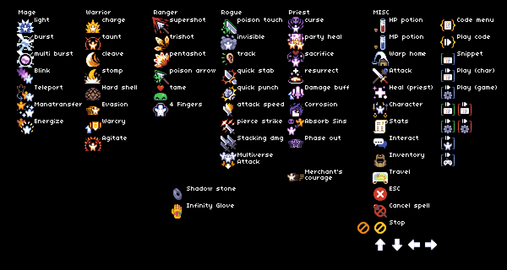
Below the level in G.skills[name].level, a skill fails with no_level. Skills with no level work at level 1.
| Level | Skill | Class |
|---|---|---|
| 20 | Energize | Mage |
| 40 | Merchant's Luck | Merchant |
| 40 | Rogue Swiftness | Rogue |
| 52 | Cleave, Stomp | Warrior |
| 55 | Absorb Sins | Priest |
| 60 | 3-Shot | Ranger |
| 60 | Paladin Aura | Paladin |
| 70 | War Cry, Dark Blessing | Warrior, priest |
| 75 | 5-Shot | Ranger |
Source: G.skills (G 17478); level check at node/server.js:9849-9851
Stats and combat
1
Magical hits only. With the target's reflection %, the hit goes back.
2
Physical hits only. Evasion % stops it. Players max out at 50.
3
The attacker's miss % or the target's avoidance %.
4
Target more than 72 px from the aim point: the hit misses.
5
Crit, rogue stacks, mob combo, a ±10% roll, then the defense curve.
Step 4 is why kiting works. Move away while you attack, and slow projectiles and melee monsters miss you.
Pure damage skips steps 1 and 2. It has no roll and ignores armor and resistance.
Source: commence_attack node/server.js:3159; complete_attack node/server.js:3707-4057
Aggro, tanks and fear
Passive monsters (aggro 0) never start a fight. Goos and snakes are passive.
Aggressive monsters check every 1.2 s. With the chance aggro, they attack a near player.
A hit makes a monster with no target select its attacker.
Fear starts when more monsters target you than your courage allows. Warriors have 5, most classes 2.
A tank bot's rule: if a monster targets a different party member, taunt it.
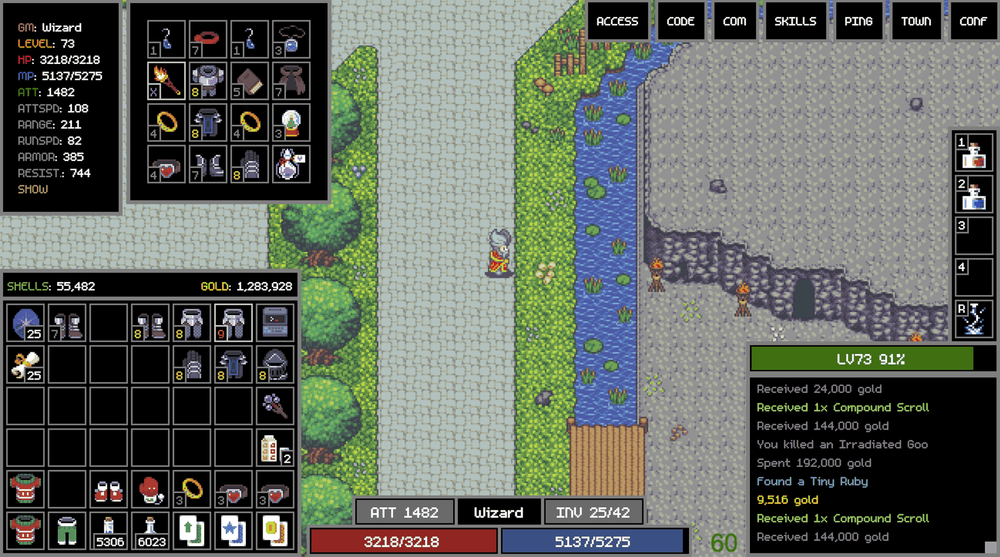
| Fear | Speed | Attack |
|---|---|---|
| 1 | −20 | × 0.6 |
| 2 | −40 | × 0.4 |
| 3 | −70 | × 0.2 |
Source: node/server.js:1727-1751, 4390-4398, 13943-13947, 14308-14319
Potions and regeneration
HP and MP return only from potions, the free regen abilities, heals, lifesteal and a new level. All of them share one potion cooldown.
| Source | Gives | Locks potions for |
|---|---|---|
| regen_hp (free) | 50 HP | 4 s |
| regen_mp (free) | 100 MP | 4 s |
| hpot0, hpot1 | +200, +400 HP | 2 s |
| mpot0, mpot1 | +300, +500 MP | 2 s |
Too early: not_ready, with the wait in ms. Poison halves potions.
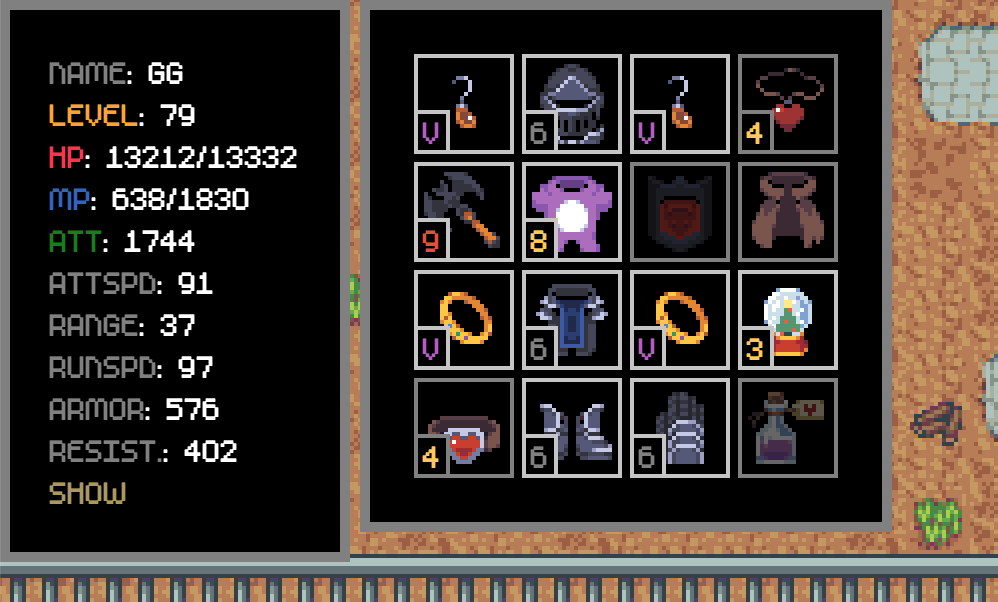
The character panel. Mages and priests use MP the fastest, so they need MP potions and Energize.
Source: node/server.js:11988-12021 (regen), 7823-7875 (potions)
Death and respawn
Xp loss: the larger of 1% of the level's xp and 2% of your current xp. You never lose a level, except on HARDCORE.
Gravestone: you stay dead (rip: true) for at least 12 s. A priest can revive you.
Respawn: back to town with full HP and half MP.
Tome of Protection: cuts the loss to 1/50, then it is used up.
Watch out: each death can give the monster a level.
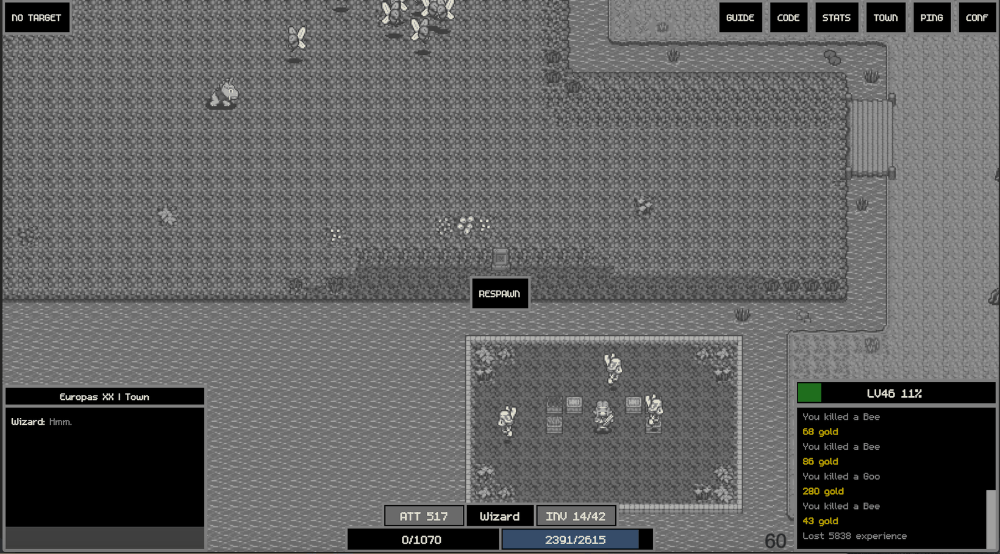
After a death the world turns gray until you respawn.
Source: node/server.js:224, 6271-6309, 13884-13936
Leveling and progression
Total xp to reach the level (log scale)
Lv 10
4,910
Lv 20
45,910
Lv 30
377 thousand
Lv 40
3.06 million
Lv 50
24.8 million
Lv 60
201 million
Lv 70
1.43 billion
Lv 80
8.87 billion
Lv 90
63.0 billion
+22%
Each level costs about 22% more than the level before. The cost doubles about every 3.5 levels.
No penalty
A level-80 character gets the same xp from a goo as a level-1 character.
Level 80 is a goal for a long time.
Source: G.levels (G 17478); node/server.js:1305-1316
Bonuses for new and solo players
| Bonus | When | Gold / xp / luck |
|---|---|---|
| New Player | The first 40 days after your first character | ×5 on days 1-10, down to ×1.5 |
| Lone Wolf | Only one fighter of your account is online | ×3 |
| Welcome Back | You return after more than 60 days away | ×3 (×2 from level 80) |
When two apply, the server uses their product. A party gives its own bonus: +10% xp with 2 fighters, up to +40% with 9.
The authfail condition stops all three bonuses. Link a platform id first.
Source: node/logic/encouragement.js:214-407; node/server.js:1186-1188
Your first hour
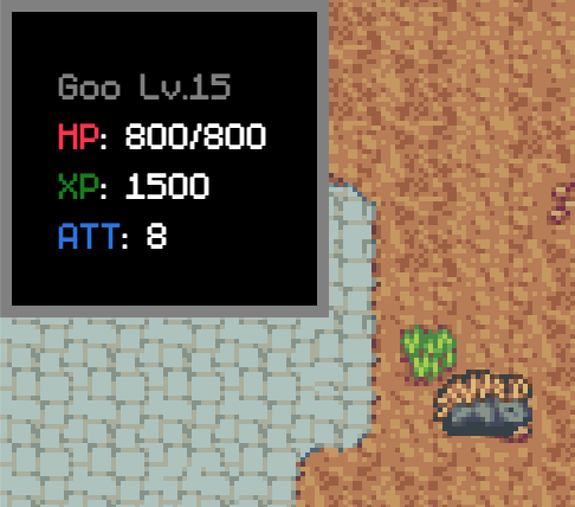
A goo has 100 HP and gives 100 xp at level 1. This one gained levels while nobody fought it.
Errors to expect: cooldown, too_far, no_mp, not_ready · Source: G.maps.main, G.levels
Your first day
Go to the next monster when you kill the current one in one or two hits.
| Monster | HP | Xp | Dmg/s | Aggro | Note |
|---|---|---|---|---|---|
| Goo (goo) | 100 | 100 | 2 | 0 | South of the spawn point |
| Bee (bee) | 300 | 400 | 8 | 1 | Attacks first |
| Tiny Crab (crab) | 400 | 500 | 10 | 0.2 | 160 armor: better for a mage |
| Snake (snake) | 720 | 960 | 14 | 0 | |
| Squig (squig) | 1,000 | 600 | 4 | 0 | |
| Armadillo (armadillo) | 1,600 | 1,720 | 10 | 0 | |
| Croc (croc) | 3,200 | 3,600 | 24 | 0.2 | |
| Tortoise (tortoise) | 7,200 | 5,200 | 18 | 0 | 200 armor |
| Huge Crab (crabx) | 4,200 | 3,600 | 72 | 0.5 | Caution: not on day one |
Source: G.monsters, G.maps.main spawn boxes (G 17478) · Levels are estimates for this guide
From level 1 to the endgame
1-20
Goos, bees and crabs near the town. Basic gear. Upgrades to +3 almost always work.
20-50
Caves, Winterland, Desertland. Merchant's Luck at 40. Gear starts to matter more than level.
50-70
The Underground. Cleave, 3-Shot, Absorb Sins. Upgrades past +6 fail more often than not.
70-90
Hundreds of millions of xp per level. Progress comes from gear and key dungeons.
90+
World and instance bosses, rare items, gear at +10 and higher, and trade.
After the first few dozen levels, gear sets the limit more than level does. Progress is a loop: farm gold and items, then change them into better gear.
The level ranges are estimates for this guide, from the xp curve and monster stats. They are not official.
Maps and the world
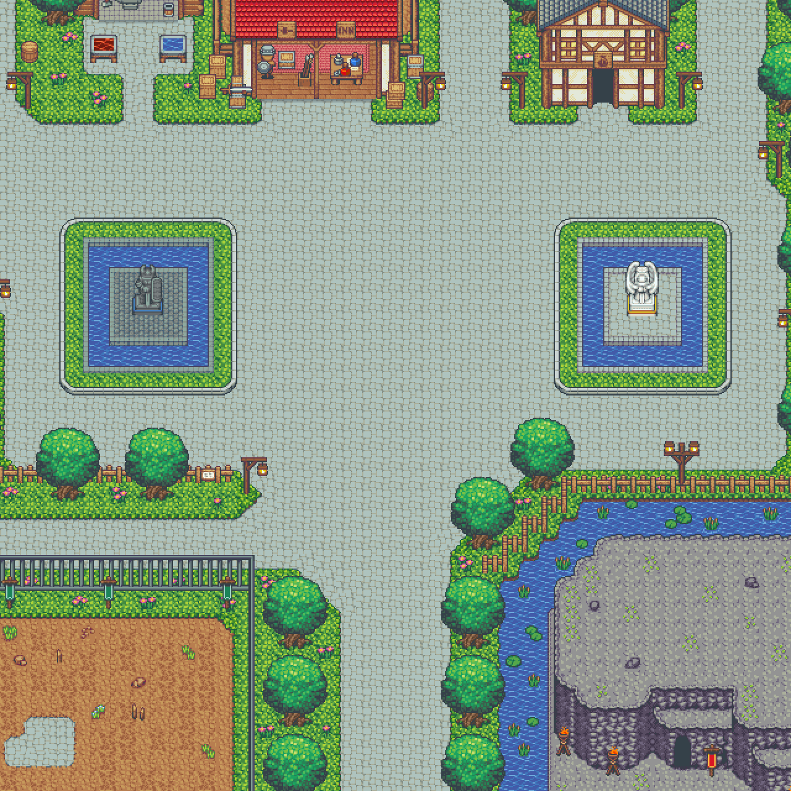
Walk with move inside a map. The server refuses moves through walls, so your bot needs its own pathfinding.
Doors connect maps. Go within 112 px, then send transport.
Alia, the transporter, takes you between towns. Stay within 160 px of her.
Town takes 3 s. It fails if more than 5 monsters target you.
Instances are private map copies. Most need a key and enter.
Magiport and Blink are mage skills that skip the walk.
Source: node/server.js:221-223 (B.door_dist, B.transporter_dist), 6254-6267 · Town art from the game's own guide
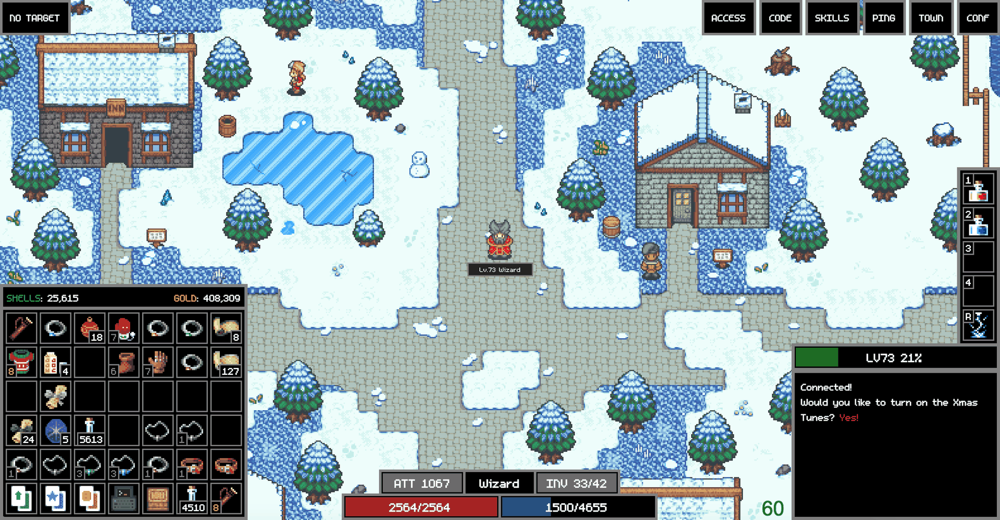
Maps and the world
Mainland: the hub, with almost all shops.
Winterland: the second town. Bees, boars, wolves, the Ice Golem.
Desertland: the third town. Scorpions, Fire Spirits, the Ent.
The Underground: tunnels of strong, aggressive monsters.
Key dungeons: Crypt, Tomb, Spider Den, Lair of the Dark Mage.
Night: 00:00 to 05:59 server time. Monsters move at 70% speed.
Source: G.maps (G 17478); node/server.js:1828-1830
NPCs and their services
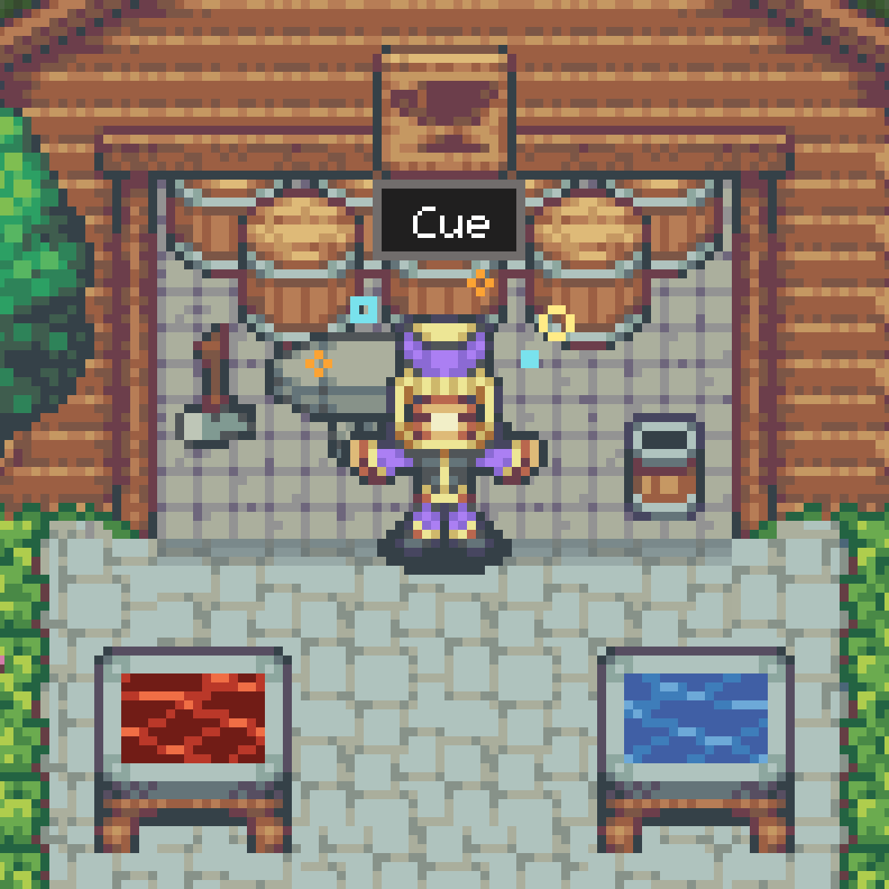
Cue does upgrades and compounds.
| NPC | Service | Position |
|---|---|---|
| Ernis | Potions | (−35, −162) |
| Gabriel | Basic gear | (−89, −165) |
| Lucas | Scrolls | (−464, −96) |
| Cue | Upgrade and compound | (−207, −220) |
| Xyn | Exchange | (−25, −478) |
| Alia | Transporter | (−83, −441) |
| Ponty | Secondhand items | (106, −47) |
| Daisy | Monster hunts | (126, −413) |
| Leo | Crafting | (92, 670) |
Mainland pixel positions · Most services need you within 400 px · Source: G.npcs, G.maps (G 17478)
Items and equipment
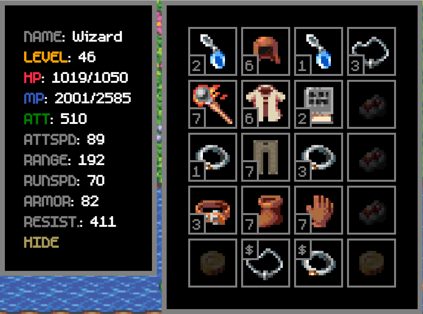
A full inventory is a bot's most frequent problem. Keep 5 or more slots free.
The same for all copies: type, base price g, base stats, and the stat increase for each level.
name, q (quantity), level, p (property such as shiny), l (lock), v (PvP mark) and a few more.
638
item definitions
16
equipment slots
42
inventory slots
Source: G.items (G 17478); js/old_common_functions.js:104, 877; node/server.js:1456
Upgrading and compounding
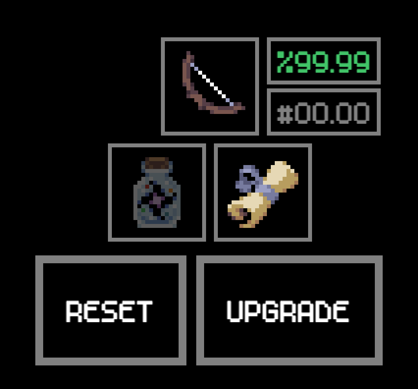
The roll shows like a slot machine, but the server rolls at once.
Base chance for a Normal item, by target level
~100
+1
98
+2
95
+3
70
+4
60
+5
40
+6
25
+7
15
+8
7
+9
2.4
+10
A failed upgrade destroys the item. Upgrade a spare, not the item a character wears.
Chance in %, from G.upgrades (G 17478) · Higher scrolls, offerings and grace raise it
Grace: the hidden luck counters
Stays on the item. Grows with higher scrolls, offerings, at random, and while the item is worn.
One for each level. Each failure raises it. A success at that level sets it to 0.
Shared by all players on the server. Starts at 24. Any player's success resets it.
Rises when an attempt with an offering fails. Falls after a success.
Most inputs are hidden. Send upgrade with calculate: true. The server returns the exact chance and uses nothing.
Also hidden: one secret "lucky" inventory slot makes your roll better 60% of the time.
Source: node/server.js:7325-7400, 7457-7487; node/server_functions.js:44-52, 3193-3199
Compounding
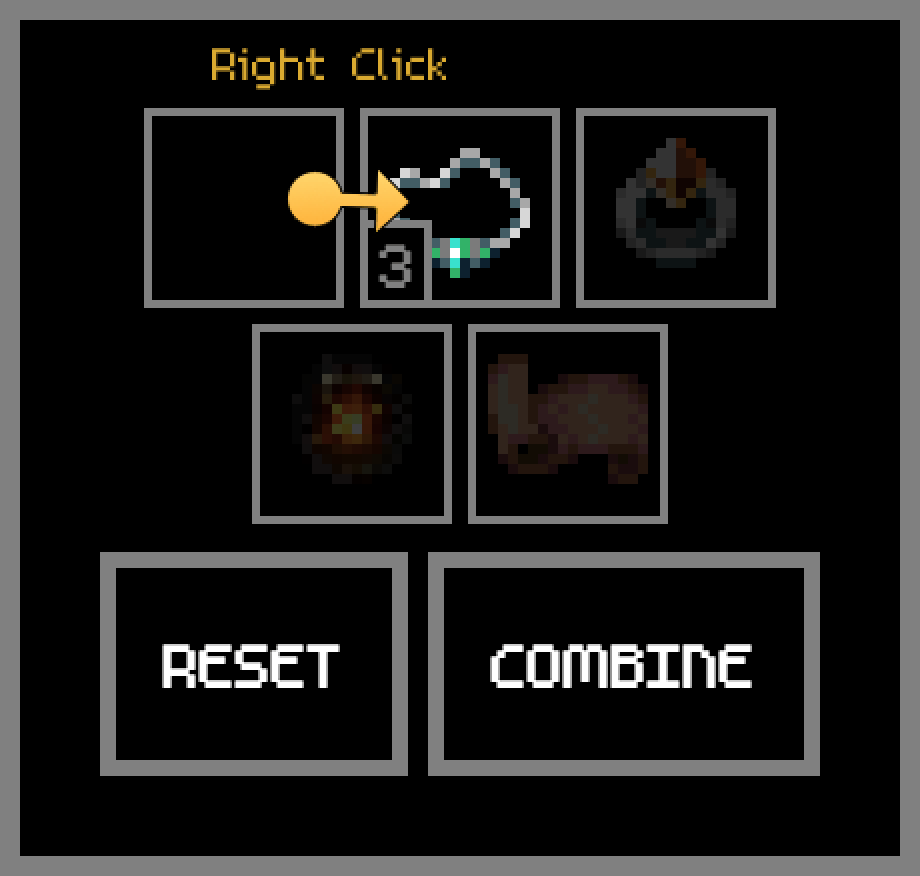
A failure destroys all three items.
| Compound to | Base chance | +0 items for one |
|---|---|---|
| +1 | 99% | 3 |
| +2 | 75% | 12 |
| +3 | 40% | 91 |
| +4 | 25% | 1,091 |
| +5 | 20% | 16,364 |
| +6 | 10% | 490,909 |
| +7 | 8% | 18.4 million |
Rule of thumb: compound to +1 (it costs almost nothing) and +2. Buy +3 and higher from players.
Source: G.compounds["0"] (G 17478); node/server.js:6943-7079 · Average without bonuses
A progression plan
| Coat (6,000 gold) | +3 | +4 | +5 | +6 | +7 | +8 |
|---|---|---|---|---|---|---|
| Average cost | 9.6k | 15k | 27k | 70k | 284k | 2.2M |
| NPC value | 5.1k | 9.2k | 16.9k | 37.6k | 108k | 344k |
Take every piece to +4, then +5, before one piece goes higher. From +4, upgrade a spare copy and swap only after a success.
Average gold for one item at that level, with destroyed copies and scrolls, base chances, no grace
Gold and the economy
Bots farm all day, so gold enters all the time. Without sinks, all prices go up.
Source: node/server.js:2393-2446, 8079, 1718-1725; node/server_functions.js:715-727; js/old_common_functions.js:54
A merchant in practice
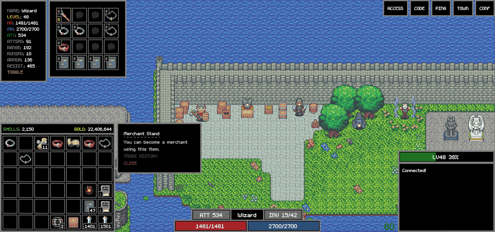
Keep what you need. Compound jewelry. Send better gear to a fighter. Stand for valuable items. Sell the rest to an NPC at once.
Source: node/server.js:1756, 3468; node/logic/market_patron.js; node/server_functions.js:4282-4299
The bank
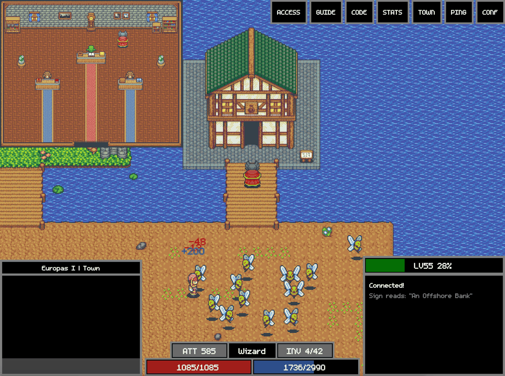
The bank is north of the town center.
Items and gold for all characters of the account. Only one of your characters can be inside at a time. Each pack holds 42 items.
| Floor | Packs | Others cost |
|---|---|---|
| The Bank | 0-7 (2 free) | 75M-112.5M gold |
| Basement | 8-23 (1 free) | 475M-1.675B gold |
| Underground | 24-47 (1 free) | 2.075B-9.995B gold |
A bkey opens the basement, a ukey the underground. Packs also sell for shells.
Source: bank_packs, js/old_common_functions.js:54-103; node/server.js:5983-6050, 9661-9686
Drops and loot
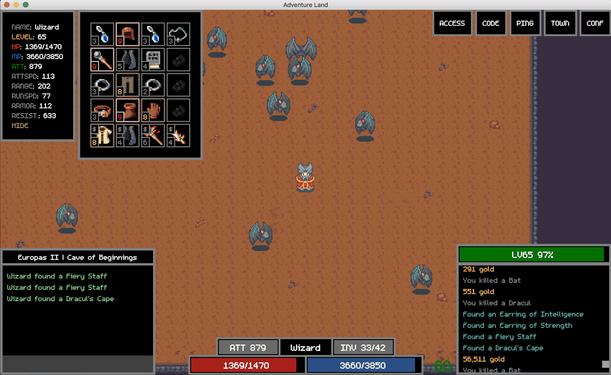
That is usually the tank. Open chests at once: after 8 minutes, or from more than 400 px, the gold bonus is lost.
drops when random() / (share × luckm × level × mult) < chance
| Chest | Holds |
|---|---|
| chest3 | Gold |
| chest4 | Gold with the ×10 bonus (3.1%) |
| chest5 | Gold with the ×50 bonus (0.2%) |
| chest6 | Items or shells |
Luck, and the level of the monster, multiply every independent roll.
Source: node/server.js:2325-2334, 2869-2893, 11273-11470
Events, bosses and seasons
Daily at 13:00 and 20:00, nightly at 23:00, in server time. Read S to find them, then send join.
| Event | When | Rewards |
|---|---|---|
| Giga Crab | daily | Funtokens, seashells, crab claws |
| Goo Brawl | daily | Funtokens, Rainbow Goo drops |
| A/B Testing | daily | Team PvP; winner and loser tables |
| Franky | nightly | Crypt and tomb keys, candy |
| Ice Golem | nightly | Frozen key, frost cores |
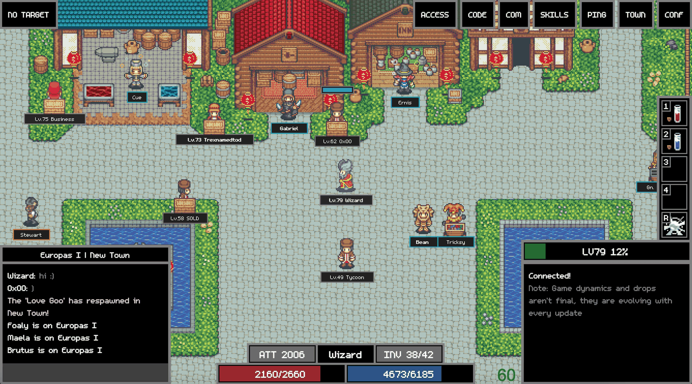
Seasons add bosses and drops while the operator turns them on: Halloween, the holidays, lunar new year, Valentine's, the egg hunt.
Source: S.schedule; node/server_functions.js:2386-2402; node/server.js:302-327
The Cave of Many Dreams
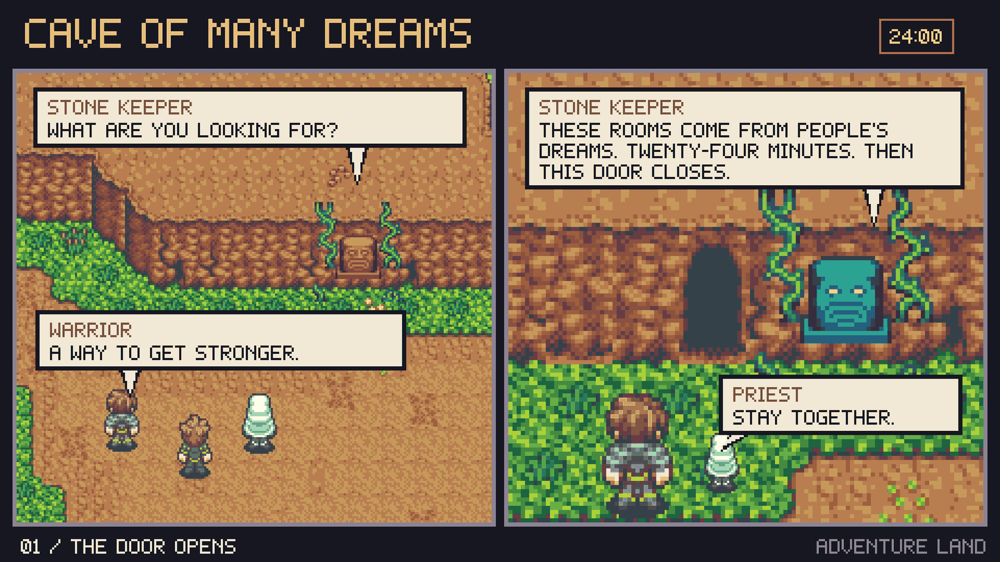
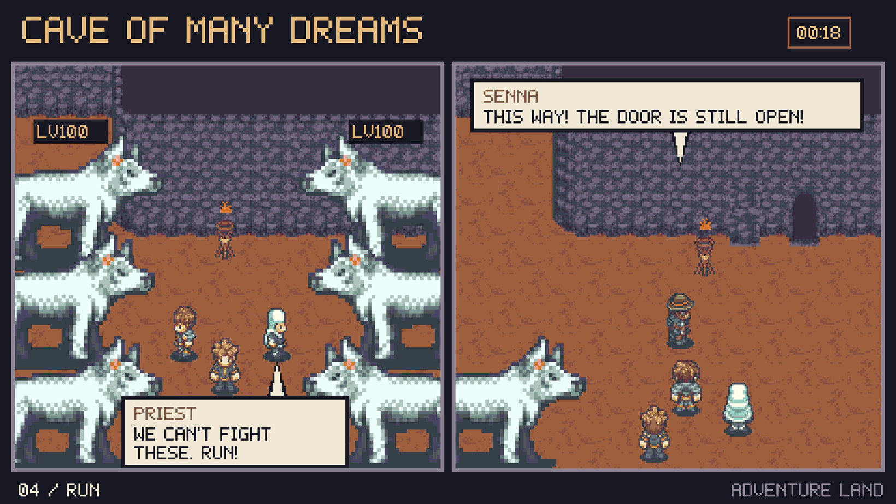
1-3
characters, 1 run a day
24 min
and 3 floors
10× xp
death costs no xp or gold
Dorr
at (816, 1200): enter dreams
Comic panels from the game's repository · Source: G.events.dreams; node/logic/cave_of_many_dreams.js
Rare random monsters
After a random number of kills on the server, the rare monster appears among the usual ones. S does not show them.
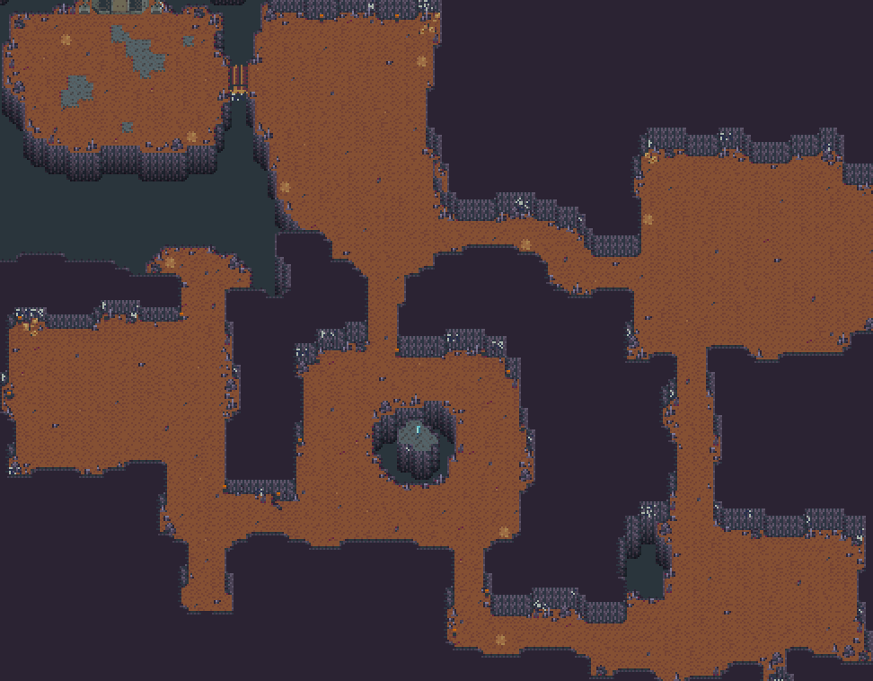
bats, 0-160k
bees, 0-960k
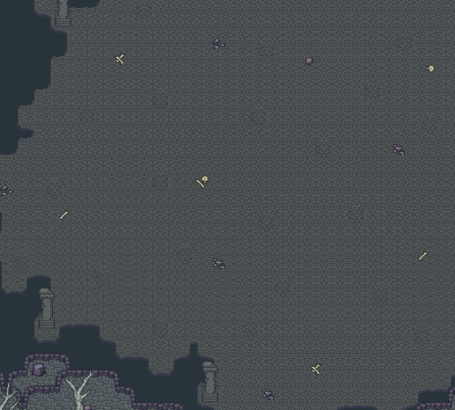
targetrons, sparkbots, 0-200k
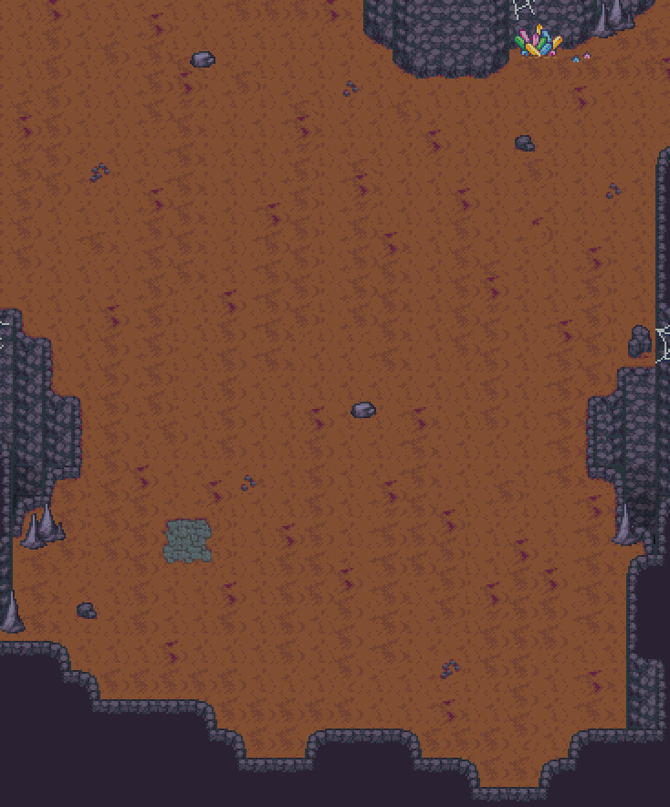
one-eyes, 0-30k
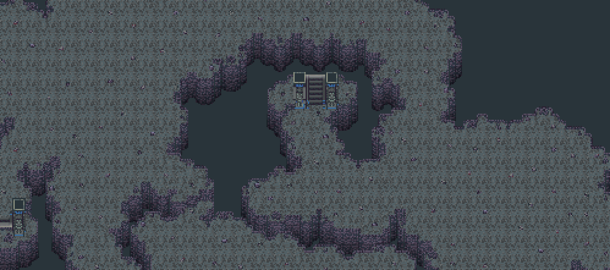
kobolds, 0-24k
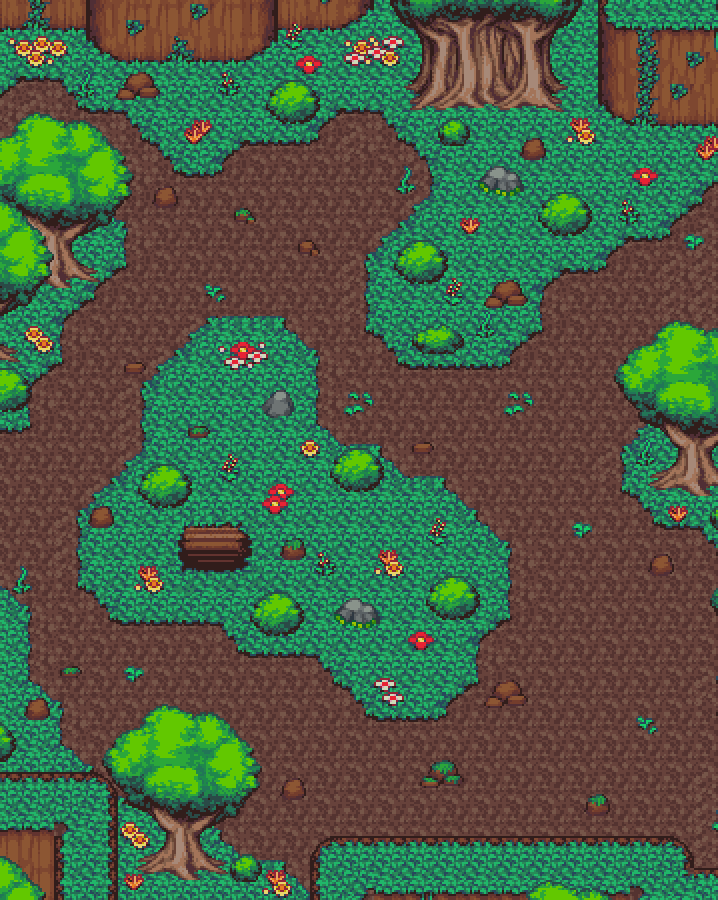
dinos, 0-60k
Habitat maps from the game's own guide · Source: node/server_functions.js:2603-2627
Parties
Each member on the server gets its share of each kill, at any distance.
Damage, heals ×1.8 and a quarter of damage taken, plus a fixed 36,000. Priests ×1.36. Merchants 0.
Each chest item goes to one member by share. Gold is divided by share.
| Fighters in the party | 2 | 3 | 4 | 5 | 6 | 7 | 8 | 9 |
|---|---|---|---|---|---|---|---|---|
| Xp bonus | +10% | +16% | +20% | +24% | +25% | +30% | +36% | +40% |
Also +5% gold for all, and +10 luck for each member below level 60.
Source: party_to_client node/server.js:1138-1210; issue_monster_award node/server.js:2834-2866
Many characters and bots
Three fighters and one merchant of an account online at a time.
All accounts of one player share the same limits.
An account must serve itself 80% of the time or more.
Accounts that run 24/7 with no contact with players can get a ban for a time.
Do not sell gold or items for money.
Do not use them. A report gets a Bug Bounty Box.
From the official guide. Read the live rules before your bot depends on them.
Source: docs/guide/limits.html, htmls/contents/terms.html; is_player_allowed node/server_functions.js:383-437
Credits
Adventure Land is made by Kaan Soral. The art, screenshots and comic panels in this deck come from the game's open-source repository, kaansoral/adventureland_mongodb, under the AdventureLandOnlyUse license.
The numbers come from game data G 17478 and the live server code. A game update can change them. The full guide, with a link to each source line: joshuawjulian.github.io/adventureland-protocol